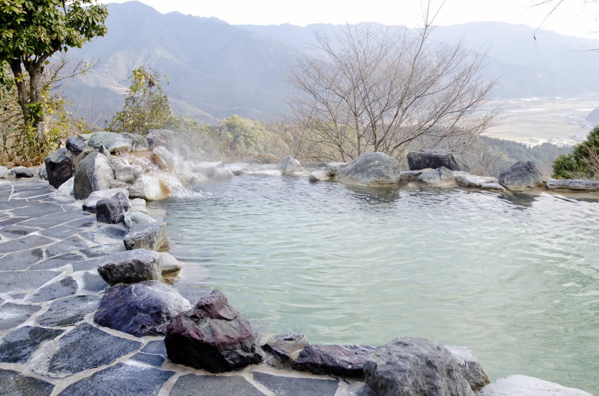

宿泊予約
宿泊予約
温泉
心も身体も癒やす汐の温泉。
湯あたりしにくく、赤ちゃんから年配の方までどなたでもゆっくりと安心して入っていただけます。
柔らかく優しい湯にじっくりと漬かれば、心身共にリラックスできます。

貸し切り露天風呂「雲居の湯」
弱酸性の湯質が優しく肌を包み込むような心地よさ
最上階の露天風呂「雲居の湯」では、湯冷めしにくい食塩泉を
熱海の町並みを遠方に望みながら・・・

美肌を促す乳白色の硫黄泉を
まじりっけなしの白いにごり湯。鳥海山から引いた酸性の強い硫酸塩泉を、
たっぷりと掛け流しています。
四季の移り変わりを、天然温泉の湯に浸りながら味わってください。
温泉の効能
| 効能 | 神経痛・慢性関節リューマチ・腰痛・冷え性・慢性婦人病・うちみなど |
| 泉質 | ナトリウム・カルシウム-塩化物泉 |
| 飲用効果 | 弱塩化物泉は肌にやわらかなため、高齢者や病後の回復期によく、飲用すれば慢性便秘や慢性消化 器病に効果があります。 |